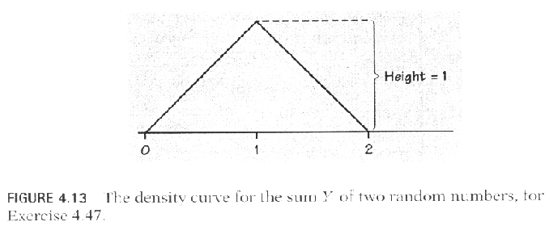

Stat 2000, Section 001, Homework Assignment 10 (Due 11/13/2002 11:59pm)
- 0) Reading: Sections 4.3, 4.4
- 1) Please work on the following textbook exercises from
Moore/McCabe (3rd Edition):
- Exercise 4.40 (2 Points):
Choose an American household at random and let the random variable X
be the number of persons living in the household. If we ignore the few
households with more than seven inhabitants, the probability distribution
of X is as follows:
| Inhabitants |
1 |
2 |
3 |
4 |
5 |
6 |
7 |
| Probability |
0.25 |
0.32 |
0.17 |
0.15 |
0.07 |
0.03 |
0.01 |
(a) Verify that this is a legitimate discrete probability distribution and
draw a probability histogram to display it.
(b) What is P(X >= 5)?
(c) What is P(X > 5)?
(d) What is P(2 < X <= 4)?
(e) What is P(X not equal to 1)?
(f) Write the event that a randomly chosen household contains more than
two persons in terms of the random variable X. What is the probability
of this event?
- Exercise 4.46 (2 Points):
Many random number generators allow users to specify the range of the random
numbers to be produced. Suppose that you specify that the range is to be
0 <= Y <= 2. Then the density curve of the outcomes has constant
height between 0 and 2, and height 0 elsewhere.
(a) What is the height of the density curve between 0 and 2? Draw a graph
of the density curve.
(b) Use your graph from (a) and the fact that probability is area under the
curve to find P(Y <= 1).
(c) Find P(0.5 < Y < 1.3).
(d) Find P(Y >= 0.8).
- Exercise 4.47 (2 Points):
Generate two random numbers between 0 and 1 and take Y to be
their sum. Then Y
is a continuous random variable that can take any
value between 0 and 2. The density curve of Y
is the triangle shown
in Figure 4.13.
(a) Verify by geometry that the area under this curve is 1.
(b) What is the probability that Y is less than 1? (Sketch the
density curve, shade the area that represents the probability, then
find that area. Do this for (c) also.)
(c) What is the probability that Y is less than 0.5?

- Exercise 4.49 (2 Points):
An opinion poll asks an SRS of 1500 adults, ``Do you happen to jog?''
Suppose that the population proportion who jog (a parameter) is
p = 0.15. To estimate p, we use the proportion phat in the
sample who answer ``Yes.'' The statistic phat is a random
variable that is approximately normally distributed with mean
mu = 0.15 and standard deviation sigma = 0.0092.
Find the following
probabilities:
(a) P(phat >= 0.16)
(b) P(0.14 <= phat <= 0.16)
- Exercise 4.52 (3 Points):
A life insurance company sells a term insurance policy to a 21-year-old
male that pays $100,000 if the insured dies within the next 5 years.
The probability that a randomly chosen male will die each year can be
found in mortality tables. The company collects a premium of $250 each
year as payment for the insurance. The amount X that the company
earns on this policy is $250 per year, less the $100,000 that it must
pay if the insured dies. Here is the distribution of X. Fill in the
missing probability in the table and calculate the mean earnings
muX.
|
Age at death |
21 |
22 |
23 |
24 |
25 |
>= 26 |
|
Payout |
-$99,750 |
-$99,500 |
-$99,250 |
-$99,000 |
-$98,750 |
$1250 |
|
Probability |
0.00183 |
0.00186 |
0.00189 |
0.00191 |
0.00193 |
? |
- Exercise 4.53 (3 Points):
It would be quite risky for you to insure the life of a 21-year-old
friend under the terms of the previous exercise. There is a high
probability that your friend would live and you would gain $1250 in
premiums. But if he were to die, you would lose almost $100,000.
Explain carefully why selling insurance is not risky for an insurance
company that insures many thousands of 21-year-old men.
- Exercise 4.62 (3 Points):
In an experiment on the behavior of young children, each subject
is placed in an area with five toys. The response of interest is
the number of toys that the child plays with. Past experiments
with many subjects have shown that the probability
distribution of the number X of toys played with is as follows:
| Number of toys xi
| 0 |
1 |
2 |
3 |
4 |
5 |
| Probability pi |
0.03 |
0.16 |
0.30 |
0.23 |
0.17 |
0.11 |
Calculate the mean muX and the standard deviation
sigmaX.
- 2) In a previous Stat 2000 class, the following point gains and
point losses between Quiz 1 and Quiz 2 have been reported:
| # Students | Point Gain/Loss |
2 | -5 |
3 | -1 |
3 | 0 |
4 | +1 |
2 | +2 |
4 | +3 |
2 | +5 |
Let the random variable Y represent the point gain/loss.
Based on this data, draw a probability histogram, draw a spike graph,
determine the cumulative probability function F(y), and draw
a graph of F(y). Mark clearly which points are included / not
included at particular positions in the graph of F(y). (8 Points)